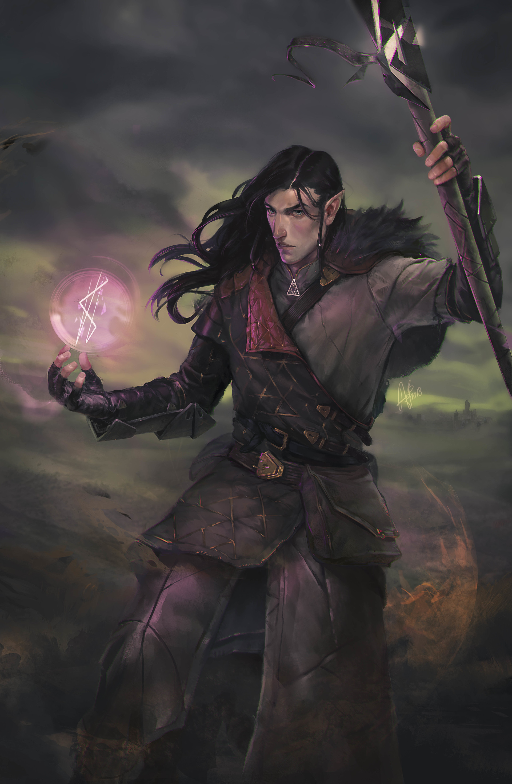
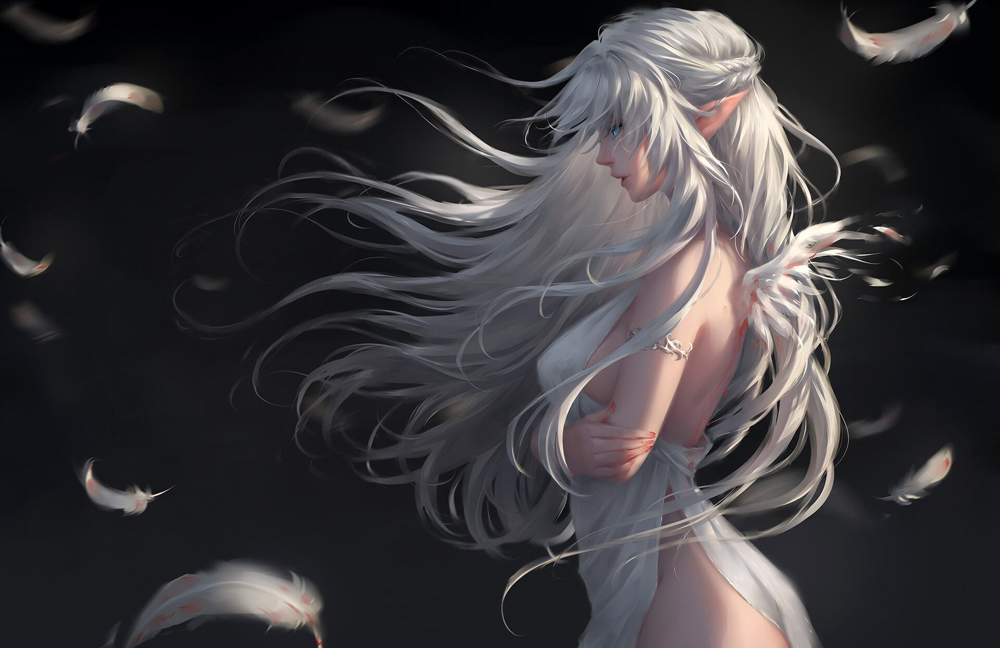

Sirius

Arda Gökay MISIROGLU tarafından canlandırılmış ve oynanmıştır. Arda'nın ikinci karakteridir. Sirius Eğriçiçeği mülkünün yakınlarında, Eğriçiçeği tebaasına bağlı bir köyde doğmuştur. Annesi bir insan babası ise bir elf olan bir yarı elftir fakat genç yaşta ailesini kaybetmiş ve öksüz kalmıştır. Asil olmayışından ve İmparatorluk Toprakları'nda doğmuş olmasından ötürü bir soyadı yoktur, Elf Babasının soyadını kullanmaktadır. Babasının soyadı "Môrn" yani siyah demektir. Hasta olarak doğmuş Sirius unutkanlık hastalığından muzdariptir. Çocukluğu, dün ne yaptığını bilmeyecek şekilde geçmiştir. Doğduğu köye kimsesizler ile ilgilenen ve çocuklara bakan bir kadın, Sirius'a okuma yazmayı öğretmiştir. Bu kadının ismi Bervi'dir. Bervi en başta Sirius'un bunu bile unutacağını düşünmüştür, fakat motor fonskiyon gibi çalışan eylemleri unutmadığını fark etmiştir. Örnek olarak Sirius; nefes almayı, yürümeyi, okuma yazmayı, hesaplama yapma gibi şeyleri unutmuyordu, sadece yaşantısını ve anılarını kaybediyordu. Bu Bervi denen kadın sıradan birisi değildi, dış dünyalardan güçler kullanabilen bir büyücüydü. Bu kadın zamanla Sirius'a bunları anlatarak Sirius'un lanetlenmiş olabileceğini söylemeyi denese de, Sirius bu konuşulanları ertesi güne unutuyordu. Bervi ise bu sorunun çözüm önerisi olarak Sirius'a bir anı defteri tutmasını söyledi. Sirius o günden sonra yaşadığı bütün anıları ve olayları, uykuya dalmadan önce defterine kaydetmeye başladı. Ertesi güne herşeyi unutarak uyandığında ise, defterin üzerindeki "beni oku" kısmını görerek bu defteri okuyor ve daha öncesinde ne olduğuna dair bilgiler öğreniyor ve böylece süreci tekrarlıyordu. Fakat bu Sirius için sürdürülebilir bir çözüm değildi. Sirius belirli bir yaşa geldikten sonra bir ergen olarak bu hastalığını çözebilmek adına bir büyü arayışına girmiştir. Bu büyü arayışı neticesinde Bervi aslında ona kim olduğunu açıklamış ve dış dünya ile nasıl bağlantı kurabileceğini öğretmiştir. Bervi'nin hizmet ettiği "Ulvi" bir kişi vardı, ve Sirius bu Ulvi kişinin bu sorunu çözebileceğine inandığı için onunla konuşmak istediğini Bervi'ye söyler. Bervi, patronunun bu sorunu çözebileceğini ama bir hizmet karşılığında bunu yapacağını söyler. Sirius bu bedelin farkındalığına vardıktan sonra kabul eder ve Bervi aracılığı ile bu Ulvi yaratık ile etkileşime geçer. Erebos adındaki bu yaratık, Sirius'un ona ne verebileceğini sorar ve umutsuzluk içerisinde yakardığı ilk güce nasıl bir sadakat ile hizmet edebileceğini sorar. Sirius bu Ulvi yaratığın sorduğu sorular karşısında kifayetsiz kalır ve ona verebilecek bir cevap bulamaz. Cevapsızlığından ve kendine duyduğu güven eksikliğinden ötürü Erebos, Sirius'un sunduğu sadakati değerli bulmaz ve onu reddeder. Ne yapacağını bilemeyen endişeli ve umutsuz Sirius, büyük bir karanlığa gömülür. Erebos'un sorusunun cevabını bilmediğini Bervi'ye söyler. Bervi ise Sirius'a bir tavsiye vererek, belki de cevabı başka yerlerde arayabileceğini söyler. Bu tavsiye üzerine umudunu tekrar yeşerten Sirius, Erebos'a verebileceği şekilde aradığı cevabı bulmak adına önce Beyaz Şehir'e, daha sonrasında ise Bulut Manastırı'na doğru bir yolculuğa çıkar. Yıllar süren bu yolculuk neticesinde Sirius büyümüştür ve görüp geçirdiği her şeyi anı defterine kaydetmeye devam etmiştir. Hem Beyaz Şehir'de hem de Bulut Manastırı'nda aradığı cevaba ulaşamasa da yönlendirmeler bulabilmiştir ve bu yönlendirmeler, aradığı cevaba Beyaz Şehir'deki Yeryüzü Tapınağı'nda ulaşabileceğini söylüyordur.
Yeryüzü Tapınağı'nda bulacağı cevap onu Archangel Mirabelle'ye götürmüştür. Tapınakta kurduğu bir meditasyon ile transa geçmeyi başarmış ve Mirabelle'nin huzuruna çıkmayı başarmış Sirius, Mirabelle ile ruhu karşılığında bir anlaşmaya varmıştır. Sirius bedenini eğitip güçlenirse, Mirabelle'nin kutsamalarına layık olacak ve böylece bundan sonra unutmayacaktı. Mirabelle'nin ise Sirius'tan istediği önemli bir görev vardı. Sirius'un Mirabelle'den aldığı görev, Uther adındaki ölmüş bir rahibi diriltmekti. Mirabelle'ye hizmet edebilmek ve onun verdiği görevi tamamlayabilmek adına Daynore Dinenlas adındaki elfi bulmalı ve onunla işbirliği yapmalıydı. Mirabelle bu elfin Zonthar'da olduğunu ve Sirius'un tez vakte bu elf ile buluşmasını söyledi. Bu sebepten dolayı Sirius, hazırlıklarını tamamlayıp yaşadığı her şeyi not aldıktan sonra Daynore'yi aramak adına Zonthar'a doğru yola koyulmuştur.
Zonthar'a vardığında Sirius, bu kasabanın bir baskın sonucu yıkıldığını ve restorasyona girdiğini görmüş, ölen kişilerin cenazesinin yapıldığını öğrenmiştir. Cenaze için gittiği Zonthar Şapel'inde, daha sonrasında Carpe Diem olarak anılacakları grup arkadaşları ile ilk defa tanışmıştır. John adındaki arkadaşlarının cenazesini yapan kişilerin Daynore ve diğerleri olduğunu öğrenmiş ve onlarla iletişime geçmiştir. Daynore'ye Mirabelle'den bahsetmiş ve neden buraya geldiğini anlatmıştır. Grubu ikna etmeyi başardıktan sonra Sirius, Daynore tarafınca gruba davet edilmiş ve onlar ile yolculuk yapabileceği söylenmiştir. Daynore, Bob ve Damian ile birlikte Sirius, grubun amaçları doğrultusunda Verdun'a doğru yola koyulmuştur. Grubun Verdun'a gitmeyi istemesinin altında yatan birkaç sebep vardı; S.A.R.S. adındaki anlamını bilmedikleri gizemli şeyi araştırma ve çalınan Yeşim Özütü hakkında seyahat ettikleri druid Orlon ile birlikte bu özütün nerede olduğunu öğrenmek adına yolculuğa koyulmuşlardır. Bu yolculuğa çıkmadan önce Sirius, Uther'in cesedinin Zonthar Mezarlığı'nda olduğunu öğrenmiştir. Bu doğrultuda dünya dışı bilgiler ile öğrendiği büyü bilgisi neticesinde Uther'i diriltebilmenin bir yolunu bulmuştur, fakat bu yolu yapmak kudretli bir büyü yapmayı gerektirdiği için kendi fani sınırlarını aşmak adına güçlenmesi gerektiğinin de farkına varmıştır. Bu sebepten ötürü unutkanlığını çözebilmek adına tehlikeli yolculuklara kucak açmış bir biçimde Verdun'a doğru grup ile birlikte yola koyulmayı kabul etmiştir. Yolculuk esnasında başına gelen, yaşadığı ve düşündüğü her şeyi anı defterine kaydetmiştir ve muzdarip olduğu hastalığı gruba açıklamıştır. Gruptaki arkadaşları, özellikle Daynore olacak şekilde Sirius'un bu sorununa çözüm bulabilmek için onun yanında olacaklarını ve ona yardım edeceklerini söylemişlerdir. Böylece yolculuk boyunca gerçek bir grup olmuşlardır ve birbirleri ile olan bağları güçlendirmişlerdir.
Verdun'a gidilen süreçte ve orada geçirdikleri zaman çerçevesinde, Seid adındaki irade sorunları yaşayan, Bulut'un Kayıp Sekiz Formu'ndan birini arayan bir keşiş ile tanışmışlar ve onu da gruplarına dahil etmişlerdir. Onunla ve Orlon'la birlikte Verdun'da büyük badireler atlattılar; Orlon ile birlikte iki tane Yeşil Ejderha ile savaştılar, sonrasında ise Ejder karkaslarını Verdun'a hediye ettiler, daha sonra Orlon ile ayrıldılar ve Verdun'un iç meselelerinin çözülmesinde yardımcı oldular, grubun ve Damian'ın aradığı S.A.R.S. hakkında araştırmalar yürüttüler, Daynore'nin düşmanı olan mutasyonlu bir Owlbear'ı avladılar ve kendini dış dünyadan gizlemiş bir Zincirdar olan Evony ile tanıştılar. Bu eski zincirdar Evony sayesinde S.A.R.S. denen şey hakkında ve Damian'ın aldığı bir bıçak hakkında bilgiler öğrendiler. Lakin bu konunun derinliği onların hiç beklemediği bir vaziyetteydi. Verdun'a geri döndüklerinde Verdun'un Mevkibeyi olan Latrell Karasancak tarafından onun konağında Zincirdarlar ile birikte karşılanma şerefine nail oldular. Zincirdarlar, onlar ile bazı bilgiler paylaştılar ve İmparator'un sözünü gruba getirerek, onlara Kal'El denen grubun sığınağını bulma görevi verdiler. Grup bu görevi şerefle kabul ettikten sonra, Carpe Diem ismiyle anılmaya ve tüm diyarda tanınmaya başladı. Sirius bu macera sırasınca bütün yaşadıklarını not olarak kaydediyor ve bu olanları idrak ederek adapte olmaya çalışıyordu. Kendini grubun bir parçası olarak hissetse de, anılarını unutması sebebiyle çoğu durumda çok kopuk kalıyordu. Gene de Kal'El'in sığınağına gitmeye istekliydi, bu yolculuk sayesinde başından çok şey geçiyordu. Mirabelle ona güçlenmesini söylemişti ve o da güçleniyordu, lakin bu Sirius'un beklediğinden çok hızlı gerçekleşiyordu, bu yüzden Kal'El'in sığınağına gitmeden önce bu unutkanlık hastalığının çaresini bulması gerektiğini düşünüyordu. Grubun, Kal'El'in sığınağın Underdark'ta olduğunu öğrenmesi ile birlikte grup korktu ve bu fikirden vazgeçti, Underdark'a inmeden önce güçlenmeleri gerektiklerine topluca karar verdiler. Bu yüzden güçlenmeleri için rotalarını Beyaz Şehir olarak belirlediler ve Verdun'dan ayrılarak yolculuklarına devam ettiler. Beyaz Şehir'e doğru giderken yolculukta birçok şey yaşadılar; normal girdikleri arbede ve çatışmalar dışında Batı Kalkanı'nda belirli bir süre geçirdiler, yolda Gündüz Yürüyenler grubu ile karşılaştırlar ve onların yardımcı kaptanı olan Jean Jacque ile bir bilgi alışverişi yaptılar ve Kal'El ile alakalı bilgiler öğrendiler, bir soylu olan Alisteir Mithralius'un cesedini buldular, karanlık ormanda gölge yaratıklar ile savaştılar ve Bob'u en çok etkileyen olay olarak, Dış Düzlemlerden gelmiş bir yaratık olan Şeytan Vaxila ile savaşıp hayatta kalmayı başardılar. Lakin Vaxila ile olan savaşları esnasında Bob, dış dünyanın onu delirtmesine izin verdi ve Feeblemind büyüsüne mağruz kaldı. Bu büyünün etkisi olarak aklını yitirdi ve bir çocuk gibi davranmaya başladı. Yaklaşık bir ay boyunca Daynore'yi annesi gibi gördü ve onun yanından ayrılmadı; yemeği Daynore ona yediriyor, tuvalete onunla gidiyor ve Daynore'nin dibinde savaşıyordu. Vaxile ile olan savaştan Sirius da psikolojik olarak kötü etkilenmişti ama bir şeytanın bir büyü aracılığı ile birilerine kendi bütünlüğünü unutturabiliyor olması Sirius'un ilgisini çekmişti. Belki de buna benzer bir güç onun anılarını geri getirebilir ve birdaha unutmamasını sağlayabilirdi. Lakin Sirius bu vebalı düşünceler sonucu ruhunu bir şeytana adayacak kadar dengesiz ve akılsız değildi, o yüzden Mirabelle'ye güvenmeyi seçti.
Bu süreçte çokca da zararlar gördüler; Sirius ölümden döndü, Damian gölge yaratıklar tarafından yutulmanın eşiğine geldi, Seid az kalsın bir uzuvunu kaybediyordu... Fakat bu olanların hiçbirisi, Bob'un başına gelen şey kadar Capre Diem'e zarar vermedi. Sirius'un ölümden döndüğü bir savaşın ardındaki gece Sirius ile Mirabelle tekrardan iletişime geçtiler. Mirabelle, Sirius'un yeterince badire atlatarak ona verebileceği kutsamayı kaldırabileceği noktaya geldiğini söyledi. Fakat bu kutsama, Sirius'un kaynağını bile bilmediği bu hastalığı sihirli bir biçimde çözmeyecekti. Bu çözüm Sirius'un beklediği bir şey değildi. Mirabelle çözüm olarak Sirius'un uyumamasını öne sürdü ve Sirius'a onu uyutmayacak bir güç verebileceğini söyledi. Sirius için uyumak güzel bir konfor olsa da, hayatını zehir eden bu hastalık o uyuduğu zaman ona musallat oluyor, ertesi güne hiçbir şey hatırlamamaya devam ediyordu. Bu yüzden Sirius bu kutsamayı kabul etti. Uyumadığı ilk gün Sirius için çok endişeli geçiyordu, ya şafak vakti bir şekilde gene hatırladığı şeyleri unutursa ne olacaktı. Sirius korkuyordu, bu çözümün bir işe yaramama olasılığından korkuyordu. Fakat arkadaşları uyandığı vakit Sirius, gece boyunca duyduğu tüm korkuları hatırlıyor ve anılarını hatırlıyordu. Bu anı duygusal bir biçimde arkadaşları ile kutlamıştı Sirius. Artık Sirius yeni bir adamdı, olması gereken adamdı... Misyonunu hatırlıyor ve kitaptaki okuduğu anıların hepsini hatırlıyordu. Gene de diğer arkadaşlarının da güçlenmesi gerektiğini bilen Sirius, onlara da süre tanımak adına onlar ile Beyaz Şehir'e gitmeye devam etti. Beyaz Şehir'e vardıklarında Bob'un yaptığı çok büyük bir ahmaklık yüzünden orada biraz zaman geçirmek zorunda kaldılar. Damian da az kalsın kendini öldürüyordu. Bu süreçte grubun şaklabanlıkları ile uğraşırken bir yandan da Sirius, Yeryüzü Tapınağı'na gidiyor ve orada dua ediyordu. Bob'un geri gelmesi ve işlerin halledilmesi ile Carpe Diem gidecekleri yeni güzergahlarına karar verme aşamasındayken, Damian bir mektup almıştır. Bu mektup, Damian'I Zonthar'a geri dönmesi niteliğinde yapılan bir çağrıydı. Kendisini mektupta bir S.A.R.S. olarak tanıtan birisi, Damian'ı provake etmek için Rahibe Andora'nın elinde olduğunu ve Damian'ın belirli bir tarihe kadar Zonthar'a dönmezse o kadını öldüreceğini söylüyordu. Sirius ve diğerleri, Damian'ı durması için uyardı, bunun bir tuzak olabileceğini söyledi fakat Damian'ı ikna etmeyi başamamışlardı ve onu yalnız bırakmamak için onunla birlikte Zonthar'a dönmeye karar verdiler.
Yolda pek fazla sorun teşkil edecek durum ile karşılaşmasalar da, şansları sayesinde birkaç işlerine yarayabilecek eşya ve hazine buldular. Ayrıca beklemedikleri iki tipte kişiyle Zonthar sınırlarına yakınken karşılaştırlar. Bu dünyadan olmadıkları her halinden belli olan iki adam ile karşılaştırlar; birisi Herbie adındaki Leonin bir Paladin, diğeri ise Replica adında dış dünyaların gücünü kullanabilen Kenku bir Warlock'tu. Bu ikili ile ilk ve son defa burada tanılıp görüştü grup. İkilinin söylediklerine göre amaçları, dünyalar arası düzeni bozan tehlikelere karşı önlem almaktı, bu yüzden Kal'El adındaki örgütü arıyorlardı, aynı bizim grup gibi. İkilinin aldığı bilgiye göre, Kal'El ile alakalı 2 ayrı yerde gelişmeler yaşanıyordu ama onlar için ayrılmak iyi bir fikir değildi. Hem Zonthar'da hem de Verdun'da bir gelişme olduğundan haberdar olduktarını söylediler. Grup ile bu ikili birlikte plan yaptı, ve en nihayetinde bu ikisi Verdun'a, grup ise Zonthar'a gitmeye karar verdi ve her iki taraf da öyle yaptı. Fakat bizim grubun bilmediği önemli bir detay vardı ki, bu detayı gittiklerinde öğrendiler. Zonthar'daki en büyük çınar ağacının uzanan dallarında, çırılçıplak veya giysili olacak şekilde; çoluk, çocuk, genç, yaşlı, kadın, erkek fark etmeksizin Zonthar halkı katledilmiş, işkence görerek ağaca asılmıştı. Ağacın yaptakları yerine insan cesetleri ağacı süslemiş, ağaçtan reçine yerine kan akıyordu. Bu olay, tarihe adını "Kanlı Çınar" olarak kazıyacaktı. Bu olayın sorumlusu olan, Quiw adındaki adam ağacın orada Damian'ı bekliyordu. Kendisi yalnız değildi ve düşük rütbeli kültistler ile buraya gelmişti. Daynore ve diğer grup üyeleri Damian'a engel olmaya çalışsalar da, bu noktadan itibaren iki tarafın savaşı kaçınılmazdı. Damian, onu buraya çağıran Quiw denen adam ile birebir bir dövüşe tutuşmuşken, Bob ve Seid ön saflara daldılar ve kültistleri birer birer elimine etmeye başladılar. Daynore ve Sirius'un arkadan onları desteklemesi üzerine işler kolay gibi görünüyordu, lakin kültist Drow suikastçiler arka tarafı hedef aldılar ve hem Sirius'u hem de Daynore'yi saf dışı bırakmayı başardılar. Sirius ölümden dönmüş, Daynore ise Drow zehri ile bayıltılmış bir biçimde bilinçsizce yatıyordu. Gene de Seid ve Bob, sayıca çok fazla olan kültistlerin üstesinden gelmeyi başardılar. Kendi takiplerini alt ettikten sonra direkt Damian'a yardıma koştular, çünkü hayatlarında ilk defa Damian'ın bir savaşı kaybettiğine şahit oluyorlardı. Kendisine S.A.R.S. diyen Quiw adındaki adam ile bire üç bir dövüşe girdiler, lakin adam üçünün gücüne eşdeğer bir biçimde savaşıyordu. Bu savaşın en nihayetinde Bob ölümcül yaralarına rağmen ayakta kalabilen ve son vuruşu yapan kişi olmuştu fakat hem Seid hem de Damian, bu savaşta hayatlarını kaybetmişti. Savaşın bitiminde ise bütün bir savaş boyunca onları izleyen dilenci gibi gözüken yaşlı bir adam, muharebe alanınde belirmiş ve Bob ile kafa bulup onunla dalga geçmiştir. Fakat ölümün eşiğine gelmiş ve savaşmaya gücü kalmamış Bob, bu dilenci gibi görünen adamın altında farklı bir güç yattığını anlayıp pankilemişti. Lakin adamın Bob'a veya diğerlerine zarar verme gibi bir niyeti yoktu, aksine Bob ile hem konuşarak hem de bir şişe vererek ona yardımcı oluyordu. Yaşlı adam Bob'a , öldürdükleri adamın kim olduğunu anlatmıştı. Herkes o adamın S.A.R.S. denen şey olduğunu zannediyordu, ama orada yaşlı adam sayesinde öğrendiler ki, S.A.R.S. aslında Kal'El'in içindeki seçilmişlerden oluşan özel elit insanlardı. Bu adamın Damian'ı kıskandığından bahsetti ve en nihayetinde adam amacına Damian'ı öldürerek ulaşmıştı, ama daha S.A.R.S. olarak çok kişi vardı. Ayrıca adam Bob'a bir şişe verdi ve bunun bir canlandırma iksiri olduğunu, fakat arkadaşları arasında bir seçim yapması gerektiğini söyledi. Bob bu adam ile konuşması bittikten ve adam gittikten sonra, Daynore ve Sirius'u uyandırarak onlara olanları anlattı ve bu şişeyi kimin üzerinde kullanmaları gerektiğini konuşmalarını söyledi. Carpe Diem bu noktada çok zor bir seçim yapmak durumundaydı, iki grup üyeleri ölmüştü ve ellerinde tek bir iksir vardı. Daynore üzgündü, dediğine göre Beyaz Şehir'den tanıdığı bir büyücü arkadaşının söylediği fakat ne olacağını tam bilmediği kötü alamet gerçekleşmişti ve şimdiyse grup lideri olarak bir seçim yapmak zorundaydı. Bu seçim Daynore için çok zor olsa da, uzun süren duygusal düşünceler ve tartışılan fikirler doğrultusunda, Daynore herkesin rızası ile bu şişeyi Damian üzerinde kullanmaya karar verdi ve dirilme iksirini Damian'a içirdi. Fakat bilmedikleri şey şuydu ki, bu iksir sadece renkli bir sudan ibaretti, ortada bir dirilme iksiri yoktu. Yaşlı adam, Carpe Diem ile alay etmişti ve onların moralini sorgulatmıştı. En başından beri azılı bir suçlu olan delirmiş bir katili diriltmeyi, bu savaşı kazanmalarını sağlayan ve hayatını Zen öğretilerine adamış ahlaklı bir keşişe tercih etmişlerdi...
Grup birlikte bir karar vermeye çalışırken, Zonthar Muharebesi'nde onlara çok büyük yardımlar eden yaşlı büyücü Armani'nin onlara yaklaştığını fark ettiler. Bu yaşlı bunak büyücü, Zonthar halkının büyük bir kesimini gelen tehlikeyi ön görerer Menzher ile anlaşarak saklamıştı. Saklananlar arasında Rahibe Andora'da bulunuyordu, Çam ağacında asılı olan kadın, onun gibi giydirilmiş başka bir kadındı. Menzher ve Armani ile konuşup onlara olanları anlattıktan ve onların fikirlerini dinledikten sonra Carpe Diem, elf diyarı olan Alve Dorei'ye gitmeye karar vermişti. Menzher'in dediğine göre orada belirli aralıklarla bir Eladrin Şehri'nin belirdiğini ve o şehirde Naixana Rüyatepe adında bir Druid'in olduğunu ve Reincarnate büyüsünü yapabilecek kudrette birisi olduğunu öğrendiler. Bu yolculukta Armani de onlara eşlik edeceğini söyledi. Eski üstad Armani'nin de kendilerine katılmasıyla birlikte grup, Damian'ı diriltmek için Alve Dorei'ye uzun bir yolculuğa çıktı. Alve Dorei'ye gitmeden önce, buradaki arbede sesine gelmiş ve ayak izlerini takip etmiş bir dövüşçü ile karşılaştılar. Bu dövüşçü, Daynore'nin Beyaz Şehir'deki en iyi dostlarından biri olan, Beyaz Şehir Büyük Arenası'nda gladyatör dövüşlerinde ün salmış arena şampiyonu Julius'tan başkası değildi. Julius uzun zaman boyunca arenada savaşmış ve kazandığı savaşklar ile özgürlüğünü kazanmış bir gladyatördü. Beyaz Şehir'de Vivien ile konuştuktan sonra Daynore'nin yardıma ihtiyacı olabileceğini düşündüğü için arkadaşına yardıma gelmişti. Daynore ile hasret giderdikten sonra Julius, Carpe Diem'e katıldı. Alve Dorei'ye Armani'nin evinde yaptığı bir ışınlanma büyüsü sayesinde gitmeyi başardılar. Bu Eladrin şehri her vakit kendini gösteren bir şehir olmadığı için, sıradaki vakti beklememek adına ellerini hızlı tutup bu şehir halihazırda yakın vakitlerde kendini göstereceği için çabuk olmaları lazımdı. Alve Dorei topraklarında zorlu yüzleşmeler ile karşılaşsalar da, gizli Eladrin Şehri'ni bulabilmeyi başardılar ve orada aradıkları Druid olan Naixana'yı buldular. Naixana'nın istediği ücreti karşıladıktan sonra Damian'ı reenkarne etmeyi başardılar. Damian yeniden bir insan olarak doğmuştu fakat tamamen değişmişti. Yüzü aynı değildi ve eskisi gibi görünmmüyordu, saç rengi değişmişti ve en önemlisi kişiliği değişmişti. Bu noktada grup; Damian'ın da dirilmesiyle, Armani ile Julius'un onlara katılmasıyla ve atlattıkları badirelerden edindikleri güç ve tecrübeyle Underdark'a inebileceklerine karar verdi. Alve Dorei yakınlarında, sınır bölgesi olarak kabul edilen bir mağara girişinde Underdark'a uzanan bir Drow Tüneli olduğunu öğrendiler. Elf hükümetinin koruduğu bu tünelden Underdark'a inmeye karar verdiler. Bu geçite doğru yola koyulduklarında, şanssız bir karşılaşma ile bir Gümüş Ejderha ile yolları kesişti ve anlaşmazlık neticesinde Grup ile ejderha birbirine girdi. Ejder savaşı çok zorlu geçmişti; Armani neredeyse kendini kızartarak ölüyordu, Damian'ın bütün kemikleri kırıldı, Daynore'nin ekipmanı zarar gördü. Fakat en önemlisi Julius, maalesef neredeyse 120 feet yukarıdan düşerek hayatını kaybetti. Bu yüzden grup Julius'u da Reenkarne etmek zorunda kaldı. Ejder'den hasat ettikleri parçaları satarak parayı çıkardılar ve Julius'u da dirilttiler fakat normalde; sevecen, güleryüzlü, ılımlı ve komik olan Julius, tamamen zıt bir kişilikte bir Yarı-Elf olarak yeniden dirildi ve sanki Damian ile roller değişmiş gibi, gruba sorun çıkarmaya başlamıştı. Alve Dorei'de son alışverişlerini yaptıktan sonra grup Underdark'a inişini gerçekleştirmiştir.
Underdark'a indikleri vakitten itibaren, güneş girmeyen ve daima karanlık olan bir yerde yürümenin deformasyonu olarak zaman algılarını kaybetmeye başladılar. Bu yolculukta onların ışığı Sirius oldu. Sirius Mirabelle'nin gücüyle yolu aydınlatıyor, yolculuğu en azından daha çekilebilir kılıyor ve suni de olsa güneş benzeri bir ışık yaratabiliyordu, böylece grubun önemli ölçüde akıl sağlığını korumasını sağlıyordu. Kal'El'in inini bulmak adına, yerini öğrendikleri bir drow kalesine doğru gitmeye karar verdiler. Oraya giderken, Hook Horrorlar gibi çeşitli garabetler ile savaştılar ve Gelecekten Gelmiş 2. bir Daynore ile tanıştılar. Gelecekteki Daynore, onlara potansiyel zorlukları ve olabilecek katastrofik senaryoları anlattı ve günümüzdeki Daynore'ye bir hediye verdi zamanı gelince kullanması adına. Yolda geçirdikleri belirsiz bir vaktin ardından Vincent adındaki bir Necromancer ve onun Nagaları ile savaştılar ve bu savaştan muzaffer ayrıldılar. Lakin Necromancer'ın inine girdiklerinde oradaki tuzaklar tetiklendi ve ikincil bir savaş esnasında Julius maalesef öldü. Onu nerede bile olduklarını hatırlayamayacakları bir noktaya hiçbir belirteç olmadan gömmek zorunda kaldılar. Julius'un yasını tutmalarının ardından grup Drow kalesine doğru yola çıkmıştı. Kaleye varmadan önce buldukları bir mağara oyuğunda dinlenmeye karar verdiklerinde bir kadın ile karşılaştılar. Mağarada garip giyinimli, uzaylı görünümlü, upuzun bir mızrak kullanan bir Githyanki oturuyordu. Damian bu kadına fazla ilgi duyuyordu, fakat kadın konuşmasını bile bilmiyordu, Daynore onunla başka bir dilde konuşarak anlaşıyordu. Daynore sayesinde, bu kadın ile ortak bir amaç bulmalarının ardından, Fen'le adındaki bu Githyanki'yi gruplarına dahil ettiler. Grupta bir fikir ayrılığı söz konusuydu, sanki Julius'un yerini dolduruluyormuş gibi hissettiren bir durum mevcuttu. Bob ve Armani bu kadının katılmasının yanlış birşey olduğunu düşünüyordu, öte yandan Damian, Daynore ve Sirius ise bu kadının gelmesini destekliyordu. En nihayetinde ise bu kadını da yanlarına aldılar ve Drow kalesine ilerlemeye devam ettiler. Drow kalesine gittikleri vakit grup iyi karşılanmadı ve kendilerini bir ölüm tuzağının içerisinde buldular. Onların yardımına Gelecekten Gelen Daynore yetişmiş ve onları kurtarmış olsa da, Gelecekteki Daynore büyük bir grup ile uğraşıyorken, nispeten daha küçük fakat elit bir grup ters taraftan grubu sıkıştırmıştı ve bir çatışma kaçınılmaz gözüküyordu. Fen'le düşündüklerinden çok daha iyi savaşıyordu, ve zor bir savaşın, kümulatif katkılar ile altından kalkmayı becermişlerdi lakin bu savaşta Armani, bir büyücünün çağırdığı küçük bir Quasit yüzünden hayatını kaybetmişti. Armani, Underdark'ta hem bilgisi hem de gerekli büyüleri ile grubun çok işine yarıyordu, bu yüzden Armani gibi usta bir büyücünün cesedini drowlara veremezlerdi, ayrıca Armani'nin yakın dostu olan Charlie'ye de söz vermişlerdi onu sağ sağlim geri getirme konusunda. Bu yüzden Armani'nin cesedini alıp, Underdark'ın başkenti olan Saphentitte adındaki şehire gitmeye karar verdiler.
Sirius, Saphentitte'ye giden yolda hayatının aşkı ile tanıştı. Underdark'ın bilinmeyen atmosferi ve habitatı içerisinde zorlu savaşlar yapmaya devam ediyorlardı, Daynore onlara yemeleri için büyü ile her gün Goodberry oluştursa da, gene de çok yorulmuşlar ve dinlenmeye ihtiyaçları vardı. Şanslarına karşılaştıkları bir durum ile yolları Harpyler ile kesişmişti. Harpyler Sirius'u görerek onu başkası ile karıştırdıkları için onu karşılamaya gelmişlerdi. Underdark boyunca Fen'le ve Gelecekten Gelen Daynore dışında gerçek anlamda karşılaştıkları düşmancıl olmayan ilk gruptu bu. Daynore ve Sirius, Harypleri ikna ederek belli bir süre dinlenecek yere ihtiyaçları olduklarını söylediler ve Harpyler Carpe Diem'i kendi yuvalarına, Underdark Harpy Kayalıkları'na götürdüler. Grub olarak kraliçe Harpy olan Harpy Kraliçesi Niemlia'nın karşısına çıkarıldılar. Ortada bir kader bağlılığı söz konusu gibi gözüküyordu. Kraliçe Sirius'u görünce duygulandı, çünkü Sirius Kraliçe'nin uzun zamandır yuvadan uzak olan eşine çok benziyordu. Orada grup öğrendi ki Kraliçe'nin eşi; aynı Sirius gibi siyah düz ve uzun saçlı ve uzun yüz hatlarına sahip bir yarı elfmiş ve bu kişi eski bir Zincirdar'mış. Kraliçe bu yabancıların yuvaya herhangi bir tehdit oluşturmadığını anladığı vakit bir yandan da duygusal bir karar vererek, onların ihtiyaçlarını karşılayabileceklerini kadar burada kalabileceklerini söyledi ve onları misafirperver bir biçimde yuvasında konuk etmeyi kabul etti. Fakat Kraliçe'nin ön göremediği bir durum vardı ki, yuvasını tehdit etmese de yuvanın bekasını tehdit ediyordu bu konu. Bu kader bağının bir uzantısı olarak, Kraliçe'nin ve eşinin bir kızı vardı. Bu kızın ismi Harpy Prensesi Zaerephys'ti. Sirius ile bu kız birbirlerini gördükleri ilk vakitte, birbirlerine karşı bir merak ve merakın getireceği biçimde farklı duygular hissetmeye başladılar. Zaerephys, babasından hasret duyduğu bir sıcaklık ve bir ışık hissediyordu Sirius'un içinde, Sirius ise kalbinde her daim bir boşluk ve eksiklik duygusu olacak vaziyette, Zaerephys'in yanındayken hayatı boyunca hissettiği ve anlam veremediği "Yalnızlık" duygusunu hissetmiyordu. Birbirlerinin yanında farklı ve çocuksu bir biçimde mutluydular. Burada kaldıkları süreçte Sirius, Carpe Diem'deki dostlarından daha çok Zaerephys ile zaman geçiriyordu ve bunu herkes görüyordu. Kraliçe bu manzaranın karşısında endişeleniyor ve kalbi kırılıyordu, fakat bir yandan da kızını bu denli hayat dolusu görünce de mutlu oluyordu. Kalbinin kırılmasındaki sebep olarak, bu ikisini gördüğünde eski hayatında eşi ile geçirdiği zamanı hatırlıyor ve o mutlu günlerini mum ile arıyordu. Endişelenmesindeki temel sebep ise; Zaerephys, Kraliçe'nin tek varisiydi. Kraliçe kızını tanıyor ve kendisiyle benzer bir kararı vermenin eşiğinde olduğunu biliyordu. Zaerephys'in yuvadan gitmesi durumunda, Kayalıklar varissiz kalacaktı ve Kraliçe'nin yönetimi bittiğinde kaçınılmaz ve kanlı bir savaş çıkacaktı. Gene de kendi ulaştığı bu mutluluktan kızını mahrum bırakmak da istemiyordu. Kraliçe'nin endişe ettiği gibi, bu sıradan bir birliktelikten hayat boyu kalacak bir aşka dönüşmüştü ve Sirius ile Zaerephys, cürretkar bir biçimde Kraliçe'nin karşısına çıkmıştı. Zaerephys, Sirius ve Carpe Diem ile Kayalıklar'dan ayrılmak istiyor ve hayatını Sirius ile devam ettirmek istiyordu. Varisin olmadığı durumda geleneklerden ötürü çıkacak kanlı savaşın hem Zaerephys hem de Kraliçe farkındaydı fakat Zaerephys, bu gelenekten Sirius'a bahsetmemişti, Sirius bunu bilmiyordu. Kraliçe, bu geleneğin sözünü açmadı çünkü Sirius'un bu geleneği bilmesinin, Sirius'un kararına olumsuz yönde etki edeceğini ve kızını üzeceğini düşündü. Bir Kraliçe olarak Niemlia, elegans duruşunu ve otoritesini bozmadı fakat bir Kraliçe olarak değil, bir Anne olarak karar verdi ve Sirius ile Zaerephys'in birlikteliğini onayladı. Hem Harpyler hem de Carpe Diem, sevinç ile dolmuştu ve geleneklere göre Zaerephys'in yuvadan ayrılmadan önce evlenerek gitmesi gerekiyordu. Birkaç gün sonrasına hemen bir evlilik hazırlandı ve bu evlilik için gereken süreçte hazırlıklar hızla tamamlandı. Harpy töresi ve geleneklerine göre, ilginç ve aşırı misafirperver bir düğün yapıldı, Carpe Diem'den isteyenler fiziksel olarak, konuklara sunulmuş olan Harpyler ile samimileştiler. Bob ile Daynore bu samimi temas ile yakınlaşmayı kabul ederek geleneklere bir saygısızlık yapmadılar, Damian ise bir eşinin olduğunu söyleyerek Fen'le ile samimileşti. Herkes için çok mutlu bir gece oluyordu, ama bu gecenin en mutlu olan ikilisi Sirius ve Zaerephys'ti. Artık Sirius, eşi ile bir ömür boyunca bağlanmıştı. Minik kuş yuvadan uçmadan önce Kraliçe'nin yapacağı son bir şey kalmıştı. Düğünün ardından Kraliçe, hem kızını hem de damadını çağırdı ve Sirius'a, Zincirdar eşinin Kraliçe'ye bıraktığı eski Büyü Asası'nı verdi. Sirius böyle bir şeyi kabul etmek istemedi, bu asanın değeri Kraliçe için paha biçilemezdi, fakat kızının da yuvadan gitmesiyle birlikte, Kraliçe'nin bu asayı kendi yanında tutmasının bir anlamı kalmamıştı. Sirius, Kraliçe'yi dinledikten sonra ikna olmuş ve yolculuğunda Zaerephys'e babasından bir parça hatırlatıcı olabilmesi adına bu asayı taşımayı kabul etmiş ve bunu layığı ile taşıyacağına söz vermiştir. Her şeyin ardından ise Carpe Diem ve Zaerephys, Harpy Kayalıkları'ndan ayrılmış ve Saphentitte'ye yolculuklarına devam etmiştir. Kraliçe, üzgün olsa da kızının bahtını kapamamış ve kızının kaderini reddetmemişti. Artık yıllar sonra savaş kaçınılmaz olacaktı. Fakat Carpe Diem'in bilmediği bir şey vardı. Harpy Kraliçesi Niemlia, tahtına Veraset sonucunda oturmamıştı... Harpyler arasında Kraliçe'nin lakabı "Kanlı Niemlia" olarak bilinirdi...
Saphentitte'ye geldiklerinde hem Armani'yi dirilttiler, hem de Kal'El'in sığınağı ile alakalı bilgiler topladılar. Bu süreçte Ölüler Meclisi adındaki kuruluş, aldıkları paranın misliyle hakkını ödeyerek Carpe Diem'e çok yardımcı oldu. Bu süreçte Ölüler Meclisi'nden Sylas ve Skull, grup ile bizzat ilgilendi. Armani'yi onlar diriltti ve Kal'El'e giden yolun Syfelin adındaki Drow şehrinden geçtiğini araştırarak öğrendi. Yapacakları plan ve para konusunda anlaştıktan sonra Carpe Diem, Sylas ve Skull birlikte Syfelin'e doğru yolculuğa çıktı. Ölüler Meclisi çok profesyonel bir şekilde çalışarak, hiçbir sorun yaşanmadan onları Syfelin'e getirmeyi başardı. Bu noktadan sonra ise Ölüler Meclisi ile grup yollarını ayırdı. Syfelin'de yeni bir rehbere ihtiyaçları vardı, bu yüzden bir drow tavernasına girerek kendilerinin işine yarayacağını düşündükleri bir drow ile anlaştılar ve o drowdan, onları Drow Tünelleri'nden geçirerek istedikleri lokasyona onları ulaştırmasını istediler. Bu drowun ismi Minofein'di ve birçok yarası olan erkek izci bir drowdu. Bu drow, grubun başına birçok bela açtı, istenmeyen düşmanlar ile savaşmalarına sebep oldu ve grubun drow tünellerinde kaybolmasına sebep oldu. Kaybolduktan sonra yolunu bulabilmesi çok uzun zaman aldı grubun ve Minofein'in, fakat bir şekilde grubu istediği noktaya getirmeyi başardı bu iştutmaz drow. Bu tünellerde Sirius ve Armani sayesinde, hem Saphentitte'de hem de Syfelin'de duydukları bir efsane hakkında ekstra bilgiler öğrendiler. Kal'El, cennetten kovulmuş ve yozlaşmış "Düşmüş Melek Fatih Harthog" adındaki ölümsüz olan bir melek ile anlaşma yapmıştı ve Kal'El'in üssüne giden bu yolda onları bu melek bekliyordu. Grup kendi içerisinde fraksiyonlara ayrılmıştı; bazı kişiler ölümsüz bir meleğin adı üstünde ölümsüz olacağını düşündüğü için bu savaşa girmemeleri gerektiğini düşünüyordu, fakat Kal'El'in sığınağına gitmenin başka alternatif bir yolu yoktu. Bu yüzden grup üyeleri arasında oraya gidip gitmemeleri gerektiğini konu alan bir tartışma çıkmıştı ve bu tartışma iyice alevlendi. Armani özellikle bu meleğin kadri ve kudretinden korkuyordu, bu yüzden Sirius'un gücünün kaynağı olan Archangel Mirabelle ile iletişime geçti. Sirius ilk başta bu fikire sıcak bakmasa da Mirabella, Sirius ile iletişime geçerek buna izin verdi. Mirabelle, Armani ve Sirius zihin olarak aynı anda birbirlerine bağlanmışlardı ve birbirlerini duyuyorlardı. Armani Mirabelle ile iletişimde olduğu süre esnasında, bir Archangel'a nasıl bir meleği öldürebileceğini sordu. Mirabelle, Armani'nin niyetindeki gerçek hinliği yakalamıştı ve ona nasıl yapılacağını söylemedi, fakat bir meleği öldürmenin mümkün olduğunu belirtti ve kendi Warlock'u olan Sirius'a bu meleğin ölümsüz doğasını delmek için gereken gücü bahşetti. Armani istediğini alamamanın siniri ve bir melek ile yüzleşmenin korkusu neticesinde, Mirabelle'nin sözlerinde bir yalan aradı ve duyduğu şeyleri reddederek yalanladı. Bunun üzerinde Sirius ve Armani arasında bir tartışma çıktı ve bu tartışmaya diğer grup üyeleri de dahil oldu. Bu tartışmanın ardındaysa grup parçalanmaya ve bölünmeye başladı. Bu bölünmeyi fiziken başlatan kişi ise Damian oldu. Damian, drow tünellerinden çıktıktan sonraki ilk dinlenme esnasında hiçbir şey söylemeden ve nereye gittiği belli olmayacak şekilde grubu terk etti. Bu hem Sirius'u hem de herkesi şaşırtmıştı. Bu gerçek karşısında motivasyonunu ve akıl sağlığını kaybeden Fen'le, Damian'ın ardından grubu terk eden ikinci isim oldu. Bu yola 2 kişi eksik devam etmeleri gerekiyordu, ve yollarının üzerinde bir engel olarak Ölümsüz bir Melek onları bekliyordu. Bu meleğe karşı olan savaşın zor, hatta neredeyse imkansız olacağını düşünen Armani, bu savaşa katılmayı reddetti ve gruba engel olmaya çalıştı. Bu noktada gruba engel olmayı başaramayan yaşlı büyücü, Carpe Diem'e küserek onlardan uzaklaştı. Underdark'ın karanlık atmosferinde önünü göremeyen Armani, uçan süpürgesine binerek bir meşale yaktı ve bir aptal gibi kendisini açık hedef haline getirdi. Kalan grup üyeleri, Bob ve Daynore'nin özgüven konuşmasının ardından, ölümlerinin muhtemel olduğunu bilerek bu melek ile savaşmaya gittiler. O sırada Kal'El'in sığınağının yakınlarında devriye gezen bir suikastçi, Armani'yi gördü ve ona bir suikast düzenleyerek öldürdü.
,Harthog ile girdikleri savaş zorlayıcıydı ve neredeyse imkansızdı. Ayrıca savaş esnasında birçok zorluklar yaşadılar; savaşa 3 kişi eksik girdiler ve Bob ön saflarda yalnız başına dövüşmek zorunda kaldı, Minofein savaş boyu bir işe yaramadı ve kendi silahlarına zarar verdi ve Zaerephys'in kontrol büyülerinin hiçbiri etkili olmadı. Fakat Gelecekten Gelen Daynore'nin verdiği ok sayesinde Daynore inanılmaz güçlü bir saldırı yapmayı başardı ve Sirius ölümsüz meleğin kırılmaz defansını penetre ettiği için Düşmüş Melek Harthog'u yenmeyi başardı. Çok uzun süren bu epik savaşın neticesinde, Harthog kaybetti fakat kendisiyle birlikte bütün herkesi Disintegre etmeye çalıştı. Carpe Diem'deki herkesin ölümün eşiğine geldiği bu savaşta grup, Düşmüş meleği öldürdü ve disintegre saldırısından da son anda kurtulmayı başardı. Bu çok önemli zaferin kutlamasını bile yapmadılar, geri dönüp Armani'yi kontrol etmek istediklerinde ise, yaşlı büyücünün cesedi ile karşılaştılar ve kitabının çalındığını fark ettiler. Bu zaferin ardından yeterince dinlenmelerinin ardından ise, dünya dışı bolluk ve bereket barındıran hazineleri alarak, Kal'El'in sığınağına devam etmek istediler. Grubun bu büyük zaferin ardından, bütün mentali kırılmıştı ve hayat enerjileri kalmamıştı. Bu maceraya bir son verebilir, kaçabilir veya daha fazla bekleyip bir yardımın gelmesini umabilirlerdi... Fakat Daynore, grubu bir ölüm yürüyüşüne gönderdi ve hep birlikte Kal'El'in sığınağına doğru yola koyuldular. Sığınağı bulduklarında ise, oranın girişinde nöbet tutan, aynı Damian gibi Flagellantlar ile karşılaştılar. Fakat çok zayıflamış bu grup, Flagellantlar ile girdiği mücadeleden sağ çıkmayı başaramadı. Sirius arkadaşlarını bu mapus kaderden kurtarmaya çalıştı ve elinden geleni denedi fakat gene de sonuç başarısızdı. Önce Minofein öldü, daha sonrasında ise Sirius sevgilisinin kollarında hayata gözlerini yumdu. Carpe Diem, Kal'El'in sığınağının önünde son savaşını verdi...
Sirius ismi, İmparatorluk tarafından tanınmıştır. Imparatorluk tarafından kendisine "Kahraman" ünvanı verilmiştir. Irkının getirdiği zorluklara takılmayıp, onurlu bir biçimde İmparatorluk ve tüm kıta uğruna savaşarak ölmüştür. Cesedi bulunamamıştır. Bazı sagularda sevdiceği ile el ele tutuşmuş bir biçimde şehit düştüğü söylenir. Carpe Diem'in kudretli, genç, potansiyelli lakin aklı başında büyücüsü en önemli kahramanlardan biri olarak hatırlanacaktır. Sevdiği kadın ile birlikte ölmesinden ötürü ikisinin de ruhu Tanrıça Kredite'ye sunulmuş ve mucizevi bir şekilde de olsa kabul görmüştür. İkisinin anı mezarındaki mezar taşlarında Tanrıça'nın Kutsaması'nı işaret eden "Kazan" sembolleri, kazınmamasına rağmen oluşmuştur. İsimleri Tanrı Anıtları'na aynı plakada olacak şekilde kazınmıştır. Sevdiği çok olan ve diyardaki bütün sevgililerin ilham alacağı şekilde hatırlanacaktır...
Unvanlar ve Lore
Unvanlar:Carpe Diem'in en güçlü büyücüsü. Hafıza hastalığını uyumayarak yendi. Harthog savaşını kazandırdı. Ölüm sonrası dirildi ve Wings of Vengeance'a katıldı.
✨ Char Sheet
Karakter Bilgileri
